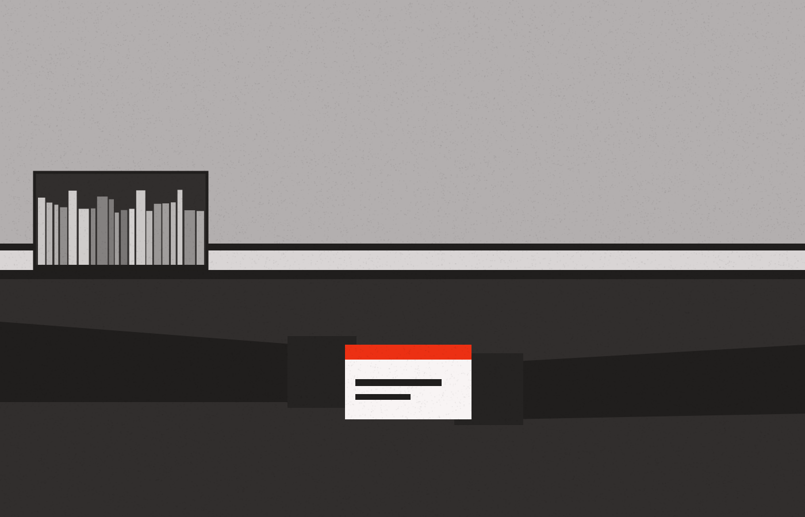

Shelfinity · UX & UI specification · v1.0 · for implementation
Shelfinity works. It does not yet feel like somewhere a person goes looking for a book. This document rewrites the whole experience — every screen, including the ones nobody screenshotted — on one visual system, one layout grammar and one set of state rules, so that any screen built later is already designed.
Audience
A coding agent implementing the front end, plus the product owner reviewing direction.
Design system
Modernist — Archivo, flat, zero radius, 2px rules, one red accent. Binding.
Companion file
Shelfinity Screens — live web + mobile mockups of every pattern named here.
Status
Direction locked. Content and role logic to be confirmed against the codebase.
00
Read §1–§9 once: they are the rules. §10 onward is the screen catalogue, and it is deliberately longer than the set of screens that were screenshotted — the point of the rules is that a screen not drawn here can still be built correctly.
Where a spec and a mockup disagree, the spec wins. Where the spec is silent, apply the nearest pattern in §7 rather than inventing one. Never introduce a colour, radius, font or spacing value that is not a Modernist token.
Definition of done, per screen
01
What I was given
Assumptions I am designing on
Open questions — do not guess in code
02
Not a taste list. Each finding is a behaviour cost, and each one is fixed by a named rule later in this document.
| Finding | Cost to the person using it | Fixed by |
|---|---|---|
| Everything is a card of equal weight | The dashboard's four counters, the recent-activity list and the page title all shout at the same volume. Nothing tells you where to look, so you read all of it or none of it. | §6 grid, §7.3 figure block |
| Status is carried by colour alone | Green/orange/blue pills mean available/pending/active. Colour-blind users and greyscale printouts lose the meaning; the palette also fights the brand. | §8 status vocabulary |
| Empty states are dead ends | "No rows", "No reservations yet.", "No email configuration set up yet." — each tells you nothing is there and offers no way forward. Overdue's empty state is the good news and looks like a failure. | §9.2 |
| Member and admin are one flat rail | An ADMIN divider inside the same list implies the two jobs are peers. They are different modes of attention: my books vs. the library's books. | §5 role model, §6.1 |
| The catalogue has no covers and no scent | Nine identical text blocks with nine identical red-violet buttons. Nothing to scan, nothing to browse — you can only search for what you already knew you wanted. | §11.4, §13 imagery |
| Identity records leak into the UI | Reservations shows 6f160ada-81f9-4ff9-… under the book title. UUIDs are for logs. | §7.5 table rules |
| Loading is a bare spinner over stale rows | The requests table dims and floats a spinner; you cannot tell whether your approval landed. | §9.1, §9.4 optimistic actions |
| Modals for one optional field | Approve/Reject open a dialog whose only content is an optional remark. Two clicks and a context switch to do nothing. | §9.4 |
| Tables are the answer to every question | My Activity is a request log. A member does not want a log; they want "what do I have, when is it due, what can I do about it". | §11.6 |
| Sign-in is a gradient with a button that leads to another sign-in | Two sign-in pages in a row, the second unbranded and warning about default social-login config. First impression is "unfinished". | §11.1 |
| No sense of place | Nothing in the product knows it is about a library: no shelves, no people, no building, no reading. | §13 imagery |
| Mobile is unaddressed | Fixed 240px rail, 6-column tables, 1100px-wide dialogs. On a phone this is a horizontal scroll. | §15 |
03
Seven rules. When a decision is genuinely open, these decide it — in order.
The catalogue is the product; administration serves it. Browsing must be the fastest, richest, most photographic surface in the app — spines, covers, faces, shelves. Every other screen can be plainer than you think.
Each page answers a single question in its first 300 vertical pixels, in words, at display size. "3 books out, 1 due Friday." Numbers on their own are trivia; a number inside a sentence is an answer.
Hierarchy comes from alignment, type size and 2px rules. Not from shadows, not from rounded floating cards, not from tinted backgrounds. If two things are different, make them a different size — not a different colour.
The accent marks the one action that moves the user forward, the current location, and genuine urgency (overdue). It is never used for decoration and never used twice for the same rank on one screen.
Loading, empty, partial, error and success are first-class layouts, written in advance, in human sentences. A screen without its four states is not finished.
Approve, reserve, renew and cancel happen immediately with an inline undo. Dialogs are reserved for the irreversible: deleting a title, deleting a person, revoking a role.
Plain, warm, specific, and never in system voice. "Ready for you at the front desk until Tuesday" — not "RESERVATION ACTIVE · EXPIRES 01/09/2026".
If two principles conflict, the one with the lower number wins. If a principle conflicts with the Modernist system, the system wins and you raise it as a question.
04
One account. A role is a set of capabilities layered onto the same person, so the member surfaces never disappear for staff — a librarian is also a borrower. The member experience is literally this app with the library-management group removed from the rail.
MEMBER · everyone
LIBRARIAN · adds
ADMIN · adds
The rail is two groups, never three: MY LIBRARY always, then MANAGE LIBRARY only if the role grants it, separated by a 2px rule and a group label. Admin-only settings sit under a single Settings entry at the foot of the rail, not as five sibling items. A member's rail therefore has four items and no dividers — it looks like a product, not a truncated CMS.
| Route | Screen | Role | Spec |
|---|---|---|---|
| /signin | Sign in (Shelfinity-hosted pre-auth) | public | §11.1 |
| /join | Request a card / register | public | §11.2 |
| / | Home | member | §11.3 |
| /books | Browse the catalogue | member | §11.4 |
| /books/:id | Book detail | member | §11.5 |
| /shelf | My Shelf (replaces My Activity) | member | §11.6 |
| /shelf/history | Reading history | member | §11.6 |
| /lists | Lists & saved searches | member | §11.7 |
| /notifications | Notifications | member | §11.8 |
| /account | Profile, card, preferences | member | §11.9 |
| /desk | Desk — staff home | librarian | §11.10 |
| /desk/requests | Requests queue | librarian | §11.11 |
| /desk/circulation | Check out / check in | librarian | §11.12 |
| /desk/catalogue | Catalogue admin + bulk import | librarian | §11.13 |
| /desk/catalogue/:id/edit | Add / edit a title | librarian | §11.13 |
| /desk/holds | Reservations & holds | librarian | §11.14 |
| /desk/overdue | Overdue & recalls | librarian | §11.15 |
| /desk/members | Members | librarian | §11.16 |
| /desk/members/:id | Member record | librarian | §11.16 |
| /reports | Reports | admin | §11.17 |
| /settings/* | Policy, email, roles, integrations, audit | admin | §11.18 |
| /404 /500 /offline | System pages | any | §11.19 |
05
Take every value from _ds/modernist-…/styles.css. The table below is a reading of that file, not a second source of truth.
| Token | Use in Shelfinity |
|---|---|
| --color-bg | Page ground. Every page. No white cards on it. |
| --color-surface | Panels, table shells, dialogs, the rail. One step, never stacked two deep. |
| --color-text | All copy, all numbers, all headings. |
| --color-accent | Primary action, current nav item, overdue, the poster statement. |
| --color-accent-100/200 | Tinted tag fills (pending, ready). |
| --color-accent-700 | Accent-coloured body text and links (contrast-safe). |
| --color-neutral-100/800 | Neutral tags — closed, returned, archived. |
| --color-divider | 2px section rules, 1px row rules, input borders. |
Retire entirely: indigo #4f46e5, the blue-violet gradient, success green, warning amber, info blue. Semantics move to the vocabulary in §8.
| Role | Size / weight | Where |
|---|---|---|
| Poster | 64–76px / 800 | Sign-in statement, statement panels only |
| Page title | 42px / 800 | One per page, flush left, no subtitle unless it earns it |
| Answer line | 25–32px / 800 | The sentence that answers the page's question |
| Section | 20px / 800 | Panel headings |
| Figure | 42px / 800 tabular | Counters — always with a noun beneath |
| Body | 15px / 400 | Prose, descriptions |
| UI / table | 14px / 400 | Rows, fields, buttons |
| Label | 11px / 600, 0.08em, upper | Column heads, group labels, kickers |
06
Page header pattern — mandatory, identical on every page
Example, Overdue: title "Overdue", answer line "Nothing is overdue. 4 loans come due this week." — the same slot carries good news and bad.
07
Build these once. Every screen in §11 is assembled from this list and nothing else.
| Component | Anatomy & rules | States | Modernist base |
|---|---|---|---|
| 7.1 NavRail | Brand · group label · items (icon + label) · rule · group · foot (person block). Accent left-bar marks current. Collapsible to icons at tablet. | default, current, hover, focus, collapsed, badge count | .nav |
| 7.2 PageHeader | Context row, title, answer line, 2px rule, optional control row. Actions right-aligned in the context row; max one primary. | with/without actions, with tabs | — |
| 7.3 FigureBlock | Replaces the stat card. Number 42px tabular, noun beneath at 11px upper, optional delta sentence at 13px. Laid out as equal cells of one panel divided by 1px vertical rules — not four floating cards. Max 4 per row, 3 on tablet, 2 on mobile. | value, zero (write the zero as good or bad news), loading skeleton, unavailable (—) | .card |
| 7.4 BookTile | Cover 2:3 in .grayscale, spine-coloured fallback with title set in Archivo when no cover. Title 17px, author 13px muted, availability sentence 13px ("3 of 3 on the shelf"), genre as a neutral tag, one action. Whole tile is the link; the button is the action. | available, some out, all out (Reserve), reserved by me, on loan to me, hover, focus, skeleton | .card + .tag |
| 7.5 DataTable | Surface shell, 11px upper heads on a 2px rule, 1px row rules, 44px rows, first column is the human-readable identity (title, person's name) with secondary info beneath at 12px muted. No UUIDs — expose them only in a copy-id affordance on the detail view. Right-most column is actions, revealed on row hover/focus but always present for keyboard and touch. | loading skeleton rows, empty, error, filtered-empty, row busy, row selected, bulk-selection bar | .table |
| 7.6 StatusTag | Word + optional 12px Lucide glyph. Three fills only (§8). Sentence case, not SHOUTING CAPS. | accent, neutral, outline | .tag |
| 7.7 SearchBar | 36px input with leading search glyph, placeholder naming the fields searched ("Title, author, subject, ISBN"), inline clear, live result count beneath at 13px. ⌘K opens the global variant as a centred panel. | idle, typing, suggesting, no-results, error | .input |
| 7.8 FacetGroup | Left column on desktop (200px), bottom sheet on mobile. Checkbox lists with counts, "Available now" toggle first. Applied facets appear as removable outline tags above the results with a "Clear all". | collapsed, expanded, applied, zero-count disabled | .field |
| 7.9 EmptyState | Left-aligned inside the panel: 20px headline that says what this place is for, one 14px sentence, one action, optional 13px hint. Never centred, never an illustration, never the word "No". | first-run, cleared-by-filter, all-done (good news) | — |
| 7.10 Skeleton | Solid --color-neutral-200 blocks matching the real geometry, 3–6 rows, 1.4s opacity pulse. Never a spinner over stale content; never a full-page loader after first paint. | row, tile, figure, text | — |
| 7.11 Toast + Undo | Bottom-left, surface, --shadow-md, 2px accent left edge, one sentence, "Undo" as a ghost button, 8s. Stacks to 3. The only confirmation most actions need. | info, success, undoable, error (persists until dismissed) | — |
| 7.12 Dialog | Only for irreversible acts. Title states the consequence ("Delete 1984 and its 3 copies?"), body names what is lost, primary button repeats the verb ("Delete"), Cancel is ghost. Optional-note fields never justify a dialog — they go inline. | default, busy, error-in-place | .dialog |
| 7.13 FormPanel | One column, max 560px, labels above fields, help text beneath, errors beneath the field in accent-700 with a glyph. Actions on a 2px rule at the foot, primary left (flush-left rule), destructive far right as ghost. | pristine, dirty, invalid, saving, saved | .field .input .btn |
| 7.14 Timeline | Vertical 1px line with 7px accent nodes; each entry has a date at 12px muted, an event sentence at 14px, actor at 12px. Used for loan history, request history, member notes, audit log. | compact, full, empty | — |
| 7.15 DueMeter | The one piece of information design in the product: a horizontal bar showing loan elapsed vs. remaining, 4px tall, ink fill, accent fill and an accent end-cap once inside 3 days or overdue. Reads without colour because the label spells the days. | fresh, due soon, due today, overdue, returned | — |
| 7.16 Pagination | Foot of table: "1–10 of 103" at 13px, prev/next icon buttons, rows-per-page select. On mobile, replaced by "Load 10 more" and a count. | first, middle, last, single-page (hide controls, keep count) | — |
08
Every status word in Shelfinity is in this table. If a new state appears, it must be added here before it appears on a screen, and it must reuse one of the three fills. Meaning is never carried by colour alone — the word carries it, the fill only ranks it.
| Domain | Word shown | Fill | Glyph | Means | Replaces |
|---|---|---|---|---|---|
| Copies | On the shelf | tag-neutral | check | ≥1 copy available | green "Available" |
| Last copy | tag-outline | alert-circle | exactly 1 left | — | |
| All out | tag-neutral | clock | 0 available, reservable | grey "Unavailable" | |
| Requests | Waiting on us | tag-accent | hourglass | pending, staff must act | orange "PENDING" |
| Approved | tag-neutral | check | granted | green "APPROVED" | |
| Declined | tag-outline | x | refused, reason required | red "REJECTED" | |
| Withdrawn | tag-neutral | — | cancelled by the member | — | |
| Loans | Due in N days | tag-neutral | calendar | >3 days remaining | plain date |
| Due Friday | tag-accent | calendar | ≤3 days — name the day, not the count | — | |
| N days overdue | accent solid | alert-triangle | past due; the only solid-accent tag in the product | red text | |
| Holds | Ready for pickup | tag-accent | bookmark | copy waiting at the desk | blue "ACTIVE" |
| Nth in queue | tag-neutral | users | waiting | blue "ACTIVE" | |
| Expired | tag-neutral | — | not collected in time | — | |
| People | Active | tag-neutral | — | can borrow | green "Active" |
| Blocked | tag-accent | ban | overdue or fines | — | |
| Librarian / Admin | tag-outline | — | role, not status — always outline | solid indigo "ADMIN" |
09
10
Nineteen screens, of which eight were screenshotted. The rest are derived from the flows those screenshots imply — this is the part of the rewrite that fills the gaps.
| § | Screen | The one question it answers | Layout recipe | Source |
|---|---|---|---|---|
| 11.1 | Sign in | Is this a real library, and how do I get in? | Split poster: statement + photograph left, one action right | redesign |
| 11.2 | Join / request a card | How do I become a member? | FormPanel + what-happens-next timeline | new |
| 11.3 | Home | What do I have, and what needs me today? | Answer line + DueMeter list + 2 shelves | redesign |
| 11.4 | Browse | What is worth borrowing? | Facets + tile grid + saved searches | redesign |
| 11.5 | Book detail | Should I borrow this, and can I? | Cover + availability panel + copies table + related | new |
| 11.6 | My Shelf | What is out, due, requested, waiting? | Four sections, one list pattern, no tabs | redesign |
| 11.7 | Lists | What did I mean to read? | List index + tile grid | new |
| 11.8 | Notifications | What changed while I was away? | Day-grouped timeline | new |
| 11.9 | Account & card | Who am I here, and how do you reach me? | FormPanel + digital card + preferences | new |
| 11.10 | Desk | What must the library do today? | Answer line + 3 queues + FigureBlock row | new |
| 11.11 | Requests | Who is waiting on a decision? | Tabs + DataTable, inline decide | redesign |
| 11.12 | Circulation | Hand over / take back a book, fast | Scan field + person panel + basket | new |
| 11.13 | Catalogue admin | Is the catalogue true? | DataTable + import panel + edit form | redesign |
| 11.14 | Holds | What must be pulled and shelved? | Two-section DataTable | redesign |
| 11.15 | Overdue | What is late and who should we nudge? | FigureBlock + DataTable + bulk nudge | redesign |
| 11.16 | Members | Who is this person and what do they have? | DataTable → member record with timeline | redesign |
| 11.17 | Reports | How is the library doing? | Figure band + 3 ranked lists + trend | redesign |
| 11.18 | Settings | How does the library behave? | Settings index + per-section FormPanel | redesign |
| 11.19 | System pages | Something broke; now what? | Poster + one action | new |
11
Web
Two columns, no gradient. Left 58%: a grayscale photograph of a real reading room, full-bleed, with the wordmark top-left and a poster statement over the lower third — "Every book in this building, from wherever you are." Right 42% on --color-bg, flush left, 96px gutter: 42px "Sign in", one sentence of what happens next, a primary Continue, a secondary "Sign in with your institution", and a ghost "Request a library card". Foot: branch, hours, telephone — three facts that prove the library exists.
The App ID hand-off cannot be fully themed. Mitigation: state it before the jump ("You'll finish signing in on our identity provider") so the change of skin is expected rather than alarming, and pass the return URL so the jump back lands on Home, not the sign-in page. If theming is possible, apply ground, Archivo, zero radius and the accent button, and remove the default-configuration warning before launch.
Mobile
Photograph as a 38vh top band with the statement over it, actions stacked full-width beneath, 44px tall, primary first. Hours and phone collapse to one line. No scroll needed to reach Continue.
States
The screenshots show USER REGISTRATION requests arriving in the admin queue, so a registration surface exists but was never designed. Web: FormPanel (§7.13) at 560px — name, email, address, membership type radio — beside a "What happens next" Timeline (§7.14): You send this → a librarian checks it, usually within a day → your card number arrives by email → you can borrow immediately. Mobile: the same form, single column, the timeline moved beneath the submit as reassurance. Success is a page, not a toast: "Sent. We'll email you at amalraj@… when your card is ready." States: pristine, invalid (field-level), submitting, sent, already-a-member (offer sign in).
Web
Mobile
States
Web
Mobile
States
The most conspicuous gap: today a member decides from a 3-line tile. Web: cover 320px wide in grayscale on the left; right column holds title at 42px, author as a link to their other titles, the availability sentence at 25px ("2 of 3 copies on the shelf"), the primary action, then the blurb, then a facts table (ISBN, publisher, year, pages, language, subjects as tags, shelf location — "Floor 2 · Bay 14 · Fiction OR"). Beneath a rule: Copies DataTable (copy id, condition, status, due date) for staff and curious members, then a Timeline of the member's own history with this title ("You borrowed this in March 2025"), then "Readers also borrowed" as a tile rail. Mobile: cover as a 200px-tall band, title, availability sentence, sticky bottom action bar carrying the primary verb; facts in a collapsed accordion. States: available → Request to borrow; all out → Reserve, with "3 people ahead of you · about 2 weeks"; already requested → "Waiting on the library since Monday" + Withdraw; on loan to me → DueMeter + Renew/Return; reserved by me and ready → accent strip "Ready at the front desk until Tuesday".
Web
Mobile
States
Lists — index of the member's lists (Want to read, plus custom) as rows with a 4-cover stack thumbnail and a count; opening one shows a tile grid with reorder and a "Request all available". Saved searches live here too, each showing its facet tags and new-match count. Empty: "Keep a list of what you mean to read." + a hint that the bookmark on any title starts one.
Notifications — day-grouped Timeline: request approved, hold ready, due-soon, overdue, card renewed. Unread carries a 3px accent left bar. Each entry links to the thing it is about and repeats the email's exact sentence (§14). Preferences link at the top right. Empty: "Nothing new. We'll tell you when a hold is ready or a book is due."
Account & card — FormPanel for name, email, phone, address; a digital library card rendered as a flat accent-on-ground block with the number in Archivo 800 and a barcode/QR for the desk; notification preferences as toggles (email, in-app, due-soon lead time); language; and a plainly-worded data section (download my history, delete my account). Mobile: card first — it is the thing people open the app to show.
Today an admin lands on the member dashboard and must go hunting. Desk answers "what must the library do today". Header answer line: "4 requests waiting, 2 holds to pull, nothing overdue." Then three queues side by side, each a short list with the verb inline: Decide (pending requests, Approve/Decline in the row) · Pull from the shelf (holds with shelf location, "Marked pulled") · Coming back today (returns due, with Check in). Beneath a rule, a FigureBlock band: on loan, overdue, holds waiting, new members this week. Mobile: the three queues as stacked accordions with counts in the header, defaulting to the non-empty ones open; 44px row actions. Empty (all clear): "The desk is clear. 97 titles on the shelf." — good news phrased as good news.
Web
Mobile
States
The physical act at the counter, absent from today's product. One field owns the screen: a 56px scan/type input, autofocused, that accepts a card number, a copy barcode or a title. Left: the person once identified — name, card, what they have out, anything blocking them. Right: the basket of copies being checked out, with due dates computed and editable by a librarian. Primary action "Check out 3 books · due 8 Sep". A .seg at the top switches Check out / Check in / Renew; Check in accepts scans continuously and shows each result as a one-line ledger entry ("1984 — back in, 2 days late, member notified"). Mobile (a phone at the shelf): the scan field and ledger only, everything else behind a sheet. States: waiting for scan, person found, person blocked (accent strip with the reason and an override for admins), unknown code, offline (queue the scans and say so).
Web
Mobile
States
Today: one table with a UUID and an ACTIVE pill. Rewritten as two sections answering two different jobs. To pull — a copy came free, someone is waiting: shelf location, member, "Mark pulled" → moves to the next section and notifies. Waiting for pickup — held at the desk with a countdown ("expires Tuesday"), actions Check out and Release. A third collapsed section holds Expired/Released for the record. Columns: Book (title + author, no id), Member (name + card), Queue position, Since / Expires. Mobile: two stacked lists, one 44px verb per row. Empty: "No holds to pull. Anything a member reserves shows up here within the hour." Fines, if in scope, attach here and to the member record — the policy is an open question (§1).
The zero state is the common case and must read as success: answer line "Nothing overdue. 4 loans come due this week." with the FigureBlock band showing 0 overdue, 0 days owed, 4 due this week — and the table replaced by the due-this-week list, so the page is useful when it has nothing to complain about. When items are late: rows sorted by days late, each with member, book, days overdue as the solid-accent tag, last-nudged date, and actions Send a reminder / Mark lost / Waive. Bulk "Remind 6 members" with a preview of the email. Mobile: cards with one verb. This is the only screen where solid accent appears more than once, and it earns it.
Index: search-first (name, email, card number), DataTable with Name (email beneath), Card, Role as an outline tag, Status, Joined, Out now, Overdue. Row click opens the member record — the screen today's Users page lacks entirely: identity panel, what they have out with DueMeters, request history and staff notes as a Timeline (§7.14), and role/permission controls behind a dialog for admins only. Actions: edit, add note, block/unblock with a reason, resend card, delete (dialog naming what is lost). Mobile: search + cards + record as a stacked page. The single-row table with pencil and bin icons at 20px is replaced by named actions.
Keep the shape, fix the hierarchy. A period control (.seg: 7 days · 30 days · Year · All) governs the whole page. One FigureBlock band of eight figures in a single divided panel — each figure paired with a change sentence ("14 borrows, up from 9"). Beneath: a borrows-over-time line chart drawn as inline SVG in ink with an accent last-point, and three ranked lists (Most borrowed · Most active members · Authors on the shelf) as compact tables with a bar behind the count rather than a floating tag pill. Every panel has "Export CSV" as a ghost action; the page has "Export all". Zero data: "Nothing borrowed in this period yet." Mobile: figures 2-up, chart full-width, lists stacked, export in the overflow.
Email Config is promoted from a rail item to one section of a Settings index: Loan policy (loan length, limits, renewals, grace period, fines) · Notifications & email · Roles & permissions · Library profile (name, branch, hours, address — the facts the sign-in page shows) · Integrations & sign-in · Audit log. Each is a FormPanel page, never a modal — the current Add Configuration dialog with nine fields becomes a page with grouped fieldsets: Server (host, port, encryption as a 3-option .seg instead of three ambiguous TLS/SSL/Auth toggles), Sender (name, address), Credentials, then a Verify panel that sends a test message and reports the result inline with the SMTP response in a details disclosure. Templates get a list with a live preview pane. States: unconfigured (EmptyState explaining what breaks without email — "Members won't be told when a hold is ready"), saving, verified with timestamp, verification failed with the actual reason.
404 · 500 · offline · no-permission · maintenance. One template: poster-size statement flush left, one plain sentence, one primary action, and the library's phone number. "That page isn't on our shelves." / "Something went wrong on our side. The catalogue is fine." / "You're offline. Your shelf is showing what we last knew." / "That's staff-only. Ask at the desk if you need it." No illustrations, no apologies longer than a sentence.
12
Photography is the only thing that will make Shelfinity feel like a place rather than a database, and it is strictly rationed: five surfaces, one photograph each, always through .grayscale, always at zero radius, never tinted, never behind text without a solid ink scrim.
| Where | Subject to shoot or licence |
|---|---|
| Sign in | The reading room, wide, from the door, with people in it and no faces identifiable. |
| Join | Two hands passing a card across the desk. |
| Home, first-run only | Someone crouched at a low shelf, reading a spine — the moment of looking for a book. |
| Browse, "Staff picks" rail | A librarian's hands on a small stack, on the desk. |
| Reports header (print) | The stacks, empty, early morning. |

Everywhere else the imagery is book covers, which are already photographs of a kind. Covers do more humanising work per pixel than any stock photo.
Rules
13
Tone: a good librarian — plain, warm, specific, never cute, never system-voice. Use the second person. Name the day, not the timestamp. Sentence case everywhere, including tags and buttons.
| Moment | Today | Rewrite |
|---|---|---|
| Sign-in | Welcome back · Sign in to Shelfinity · Continue to sign in | Sign in · You'll finish on our identity provider, then land back here. · Continue |
| Dashboard greeting | Welcome, Amalraj · Here's what's happening in your library. | Good afternoon, Amalraj · You have 3 books out. 1984 is due Friday. |
| Availability | 3 of 3 copies available | All 3 copies on the shelf · 2 of 3 on the shelf · All out — 3 people waiting |
| Borrow action | Request to Borrow | Borrow this (the request is our problem, not the member's) |
| Request pending | PENDING | Waiting on the library · since Monday |
| Approved with date | APPROVED · 8/9/2026 | Yours until Monday 8 September |
| Reservation | ACTIVE · Expires 1/9/2026 | Ready for you at the front desk until Tuesday |
| Overdue | (red text, a date) | 6 days overdue — please bring it back or renew |
| Empty reservations | No reservations yet. | Nothing reserved. Reserve any title that's all out and we'll hold it for you. |
| Empty overdue | No rows | Nothing overdue. The shelves are square. |
| No email config | No email configuration set up yet. | Email isn't set up, so members aren't being told when a hold is ready. Set it up → |
| Approve dialog | Approve request · Admin remark (optional) · Confirm | (no dialog) Approved · due 8 Sep · Undo · Add a note |
| Decline reason | Reject request · Admin remark (optional) | Why are you declining? Not a member yet · No copies free · Duplicate · Other — the member sees this. |
| Sign out | Sign out | Sign out · toast: You're signed out. Your shelf is safe. |
Do
Don't
14
Non-negotiable
Motion budget
Keyboard
15
Six rules that turn any desktop screen in this document into its phone version without a new design.
| Desktop | Becomes on mobile | Why |
|---|---|---|
| 240px nav rail | 4-tab bottom bar; the rest of the rail inside "More" | Thumb reach; four is the honest limit |
| DataTable | Cards: identity line, two facts, one primary verb, overflow sheet | Six columns never fit; a card can prioritise |
| FigureBlock row of 4 | 2 × 2 grid, same divided panel | Keeps the comparison, halves the width |
| Facet column | "Filter (2)" button → bottom sheet with Apply / Clear | Filtering is a task, not a permanent frame |
| Right-hand secondary column | Moves below the primary content, or into More if it is reference | One column, priority order |
| Dialog | Bottom sheet, full-width buttons, 44px, primary last for thumb | Sheets don't fight the keyboard |
Breakpoints: <768 phone · 768–1023 tablet (icon rail, 2-column content) · 1024–1439 desktop · ≥1440 wide (5-column browse grid, content capped at 1240px). Test the requests queue and browse grid at every one — they are the two screens that break.
16
Shell ✓ · PageHeader with an answer line ✓ · four data states ✓ · statuses from §8 ✓ · mobile per §15 ✓ · keyboard + focus ✓ · copy passes §13 tone ✓ · no token violations ✓.